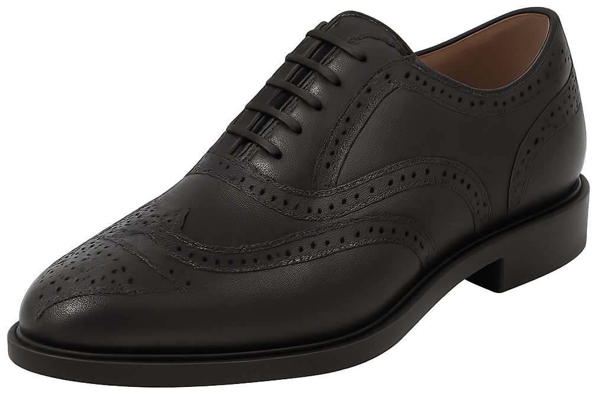

Brogue
O brogue surgiu na Escócia e Irlanda como sapato de trabalho, com furos no couro que ajudavam a escoar a água. Com o tempo, esses furos viraram um detalhe decorativo, transformando o brogue em um clássico da moda masculina. O termo se refere ao padrão perfurado — e não à forma do sapato. É possível encontrar brogues em vários modelos, como derbies, botas e o oxford brogue, que combina a construção formal do oxford com o estilo brogue. Use versões mais elaboradas com jeans ou alfaiataria pesada e os modelos discretos com ternos. Ele adiciona textura e personalidade a qualquer visual.